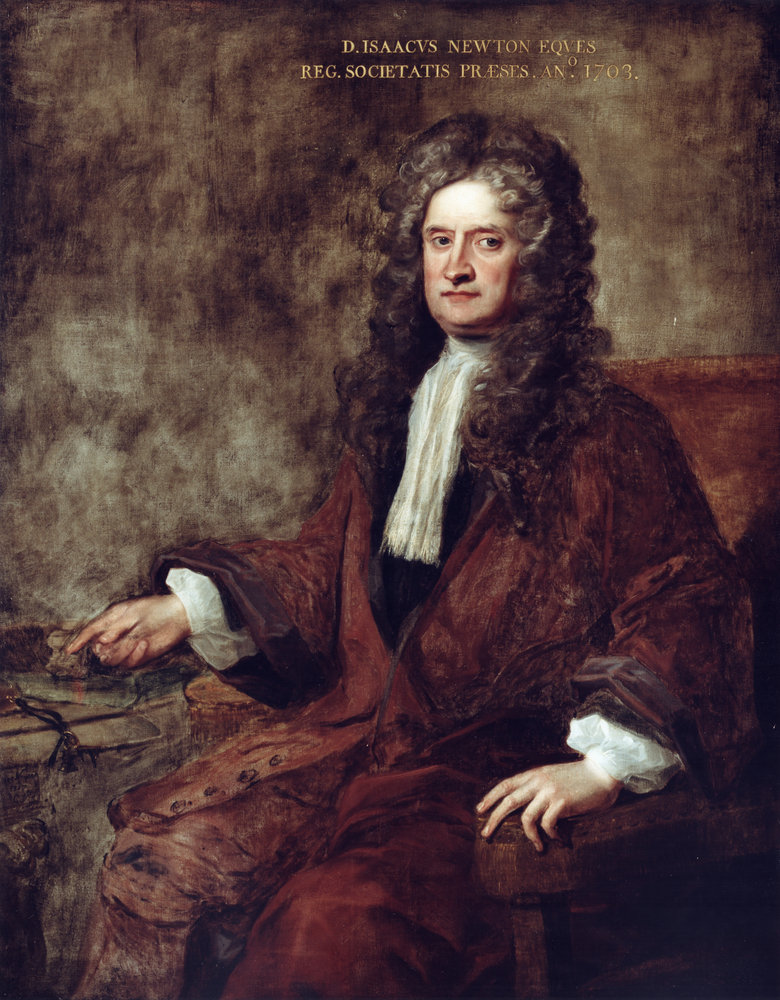

Absolute space is Isaac Newton's concept of a fixed, immovable three-dimensional framework that exists independently of all matter and energy. Newton introduced the idea in his Principia Mathematica (1687), defining absolute space as something that "remains always similar and immovable without relation to anything external." In this view, space is a container that would exist even if it were completely empty, and all true motion is measured against it.

Charles Jervas (1717); National Portrait Gallery, London
Newton needed absolute space because his laws of motion, especially the law of inertia, require a reference frame that defines what it means to be "at rest" or in "uniform motion." He distinguished absolute space from relative space, which simply describes the positions of objects with respect to one another.
Newton's Bucket Argument
Newton's most famous argument for absolute space involves a spinning bucket of water. When the bucket first starts to spin, the water inside has not yet caught up, and its surface stays flat. As the water begins to co-rotate with the bucket, the surface curves into a bowl shape. Newton pointed out that the curvature is greatest when the water and bucket rotate together, so the water's shape cannot be explained by motion relative to the bucket. He argued it must be rotating relative to absolute space itself.
Challenges and Replacement
Not everyone accepted the idea. Gottfried Wilhelm Leibniz argued in 1715–1716 that absolute space is meaningless: if the entire universe were shifted through it, nothing observable would change. Later, Ernst Mach proposed that inertial effects like centrifugal force arise not from rotation relative to absolute space, but from rotation relative to all the matter in the universe. This idea became known as Mach's principle.
The experimental case against absolute space grew with the Michelson–Morley experiment (1887), which failed to detect Earth's motion through the luminiferous aether, the medium thought to fill absolute space. The measured fringe shift was no more than 0.02 fringes, far below the expected 0.40.
Albert Einstein's special relativity (1905) removed the need for absolute space entirely by showing that the speed of light is the same in all inertial frames. His general relativity (1915) went further, replacing fixed space with a dynamic spacetime whose geometry is shaped by the distribution of matter and energy. Modern physics uses inertial frames of reference rather than absolute space, though the philosophical debate between absolutism and relationalism continues.